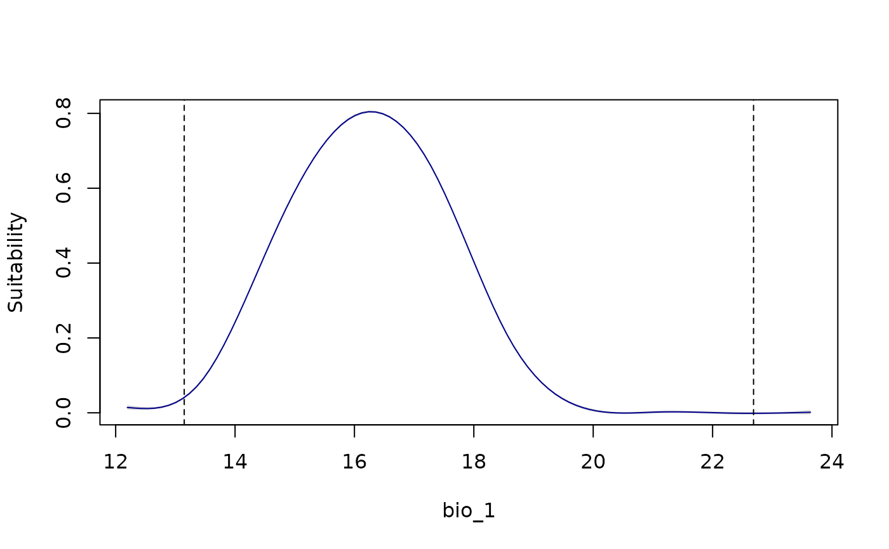

Variable response curves for fitted models
response_curve.RdA view of variable responses in fitted models. Responses based on single or multiple models can be plotted.
Usage
response_curve(models, variable, modelID = NULL, n = 100,
by_replicates = FALSE, data = NULL, new_data = NULL,
averages_from = "pr_bg", extrapolate = TRUE,
extrapolation_factor = 0.1, add_points = FALSE, p_col = NULL,
l_limit = NULL, u_limit = NULL,
xlab = NULL, ylab = "Suitability",
col = "darkblue", ...)Arguments
- models
an object of class
fitted_modelsreturned by thefit_selected()function.- variable
(character) name of the variable to be plotted.
- modelID
(character) vector of ModelID(s) to be considered in the models object. By default all models are included.Default = NULL.
- n
(numeric) an integer guiding the number of breaks. Default = 100
- by_replicates
(logical) whether use replicates or full_model to estimate the model's response curve. Default = FALSE.
- data
data.frame or matrix of data used in the model calibration step. Default = NULL.
- new_data
a
SpatRaster, data.frame, or matrix of variables representing the range of variable values in an area of interest. Default = NULL. It must be defined in case the model entered does not explicitly include a data component.- averages_from
(character) specifies how the averages or modes of the variables are calculated. Available options are "pr" (to calculate averages from the presence localities) or "pr_bg" (to use the combined set of presence and background localities). Default is "pr_bg". See details.
- extrapolate
(logical) whether to allow extrapolation to study the behavior of the response outside the calibration limits. Ignored if
new_datais defined. Default = TRUE.- extrapolation_factor
(numeric) a multiplier used to calculate the extrapolation range. Larger values allow broader extrapolation beyond the observed data range. Default is 0.1.
- add_points
(logical) if
TRUE, adds the original observed points (0/1) to the plot. Default =FALSE.- p_col
(character) color for the observed points when
add_points = TRUE. Any valid R color name or hexadecimal code. Default = "black".- l_limit
(numeric) specifies the lower limit for the variable. Default is
NULL, meaning the lower limit will be calculated based on the data's minimum value and theextrapolation_factor(ifextrapolation = TRUE).- u_limit
(numeric) specifies the upper limit for the variable. Default is
NULL, meaning the upper limit will be calculated based on the data's minimum value and theextrapolation_factor(ifextrapolation = TRUE).- xlab
(character) a label for the x axis. The default, NULL, uses the name defined in
variable.- ylab
(character) a label for the y axis. Default = "Suitability".
- col
(character) color for lines. Default = "darkblue".
- ...
additional arguments passed to
plot.
Details
The response curves are generated with all other variables set to their mean values (or mode for categorical variables), calculated either from the presence localities (if averages_from = "pr") or from the combined set of presence and background localities (if averages_from = "pr_bg").
For categorical variables, a bar plot is generated with error bars showing variability across models (if multiple models are included).
Examples
# Example with maxnet
# Import example of fitted_models (output of fit_selected())
data(fitted_model_maxnet, package = "kuenm2")
#Response curves
response_curve(models = fitted_model_maxnet,
variable = "bio_1", by_replicates = TRUE)

response_curve(models = fitted_model_maxnet, variable = "bio_1",
modelID = "Model_13", by_replicates = TRUE)
 # Example with GLM
# Import example of fitted_models (output of fit_selected())
data(fitted_model_glm, package = "kuenm2")
#Response curves
response_curve(models = fitted_model_glm,
variable = "bio_1", by_replicates = TRUE)
# Example with GLM
# Import example of fitted_models (output of fit_selected())
data(fitted_model_glm, package = "kuenm2")
#Response curves
response_curve(models = fitted_model_glm,
variable = "bio_1", by_replicates = TRUE)
 response_curve(models = fitted_model_glm, variable = "bio_1",
modelID = "Model_1", by_replicates = TRUE)
response_curve(models = fitted_model_glm, variable = "bio_1",
modelID = "Model_1", by_replicates = TRUE)